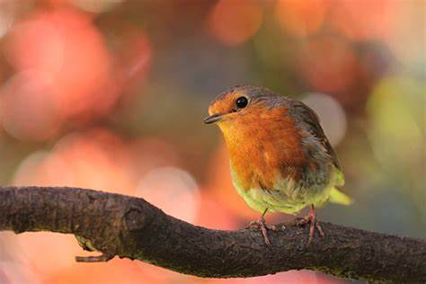

Enfoque Selectivo
Por muy buena que sea nuestra cámara u objetivo, si no sabes aprovechar las prestaciones de las que estos disponen, raramente conseguirás fotografías llamativas o impactantes para el espectador, como mucho conseguirás fotografías de una calidad aceptable, pero no con tu propia personalidad, para ello necesitarás usar el enfoque selectivo
Una vez tienes claro cuál es el funcionamiento de tu cámara y objetivos, es el momento de darle personalidad a tu foto, eso podemos conseguirlo con el enfoque selectivo, pero, ¿qué es exactamente este término?
Se trata de una forma de enfoque en la que un objeto o sujeto se mantendrá en primer plano totalmente enfocado, mientras que el resto de la imagen queda completamente fuera de foco o desenfocado.

El enfoque selectivo nos permite dirigir la mirada del espectador justo a la parte de la imagen donde se encuentra el interés, mientras que el resto pasa a formar parte de un segundo plano.